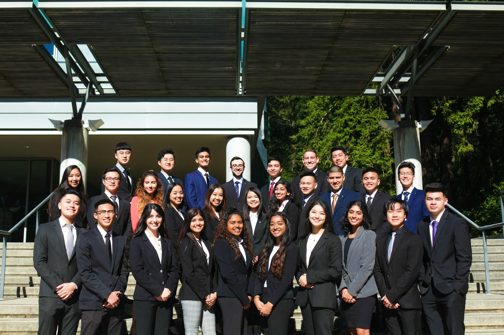

Advertisment Posters
Chinatown, Oakland
Wa Sung Community Service Club
~Summer 2020 - Present~
Wa Sung WebsiteWa Sung is a community service club located in Oakland Chinatown. We would do volunteer work in the Bay Area such as cleaning up trash on the beach and feeding the frontline during covid19.

Alpha Kappa Psi
Chi Gamma
Alpha Kappa Psi (Chi Gamma)
~May 24th 2019 - Present~
UCSC's AKPsi WebsiteAlpha Kappa Psi is the biggest professional co-ed business fraternity in the world. This professional organization now has spread to 4 different countries with more than 290,000 members at 200+ universities. The Chi Gamma Chapter is based in the University of California, Santa Cruz.
- Organized and facilitated multiple fundraisers set over the course of 6 weeks earning a total of $2,300 in profit.
- Attended various professional development workshops to educate ourselves on how to behave in professional settings.
- Assisted the Executive Board members with planning and promoting inter-chapter events, advertising, and recruitment
Contributions:
Key Club
District 2
Key Club (Division 2N)
~September 2014 - June 2017~
Key Club's WebsiteKey Club is a student-led high school community service club. This organization now have over 30+ districts all around America.

- Baked and sold cookies along with other baked goods for the Pediatric Trauma Program.
- Fundraised and participated for more than 200+ hours